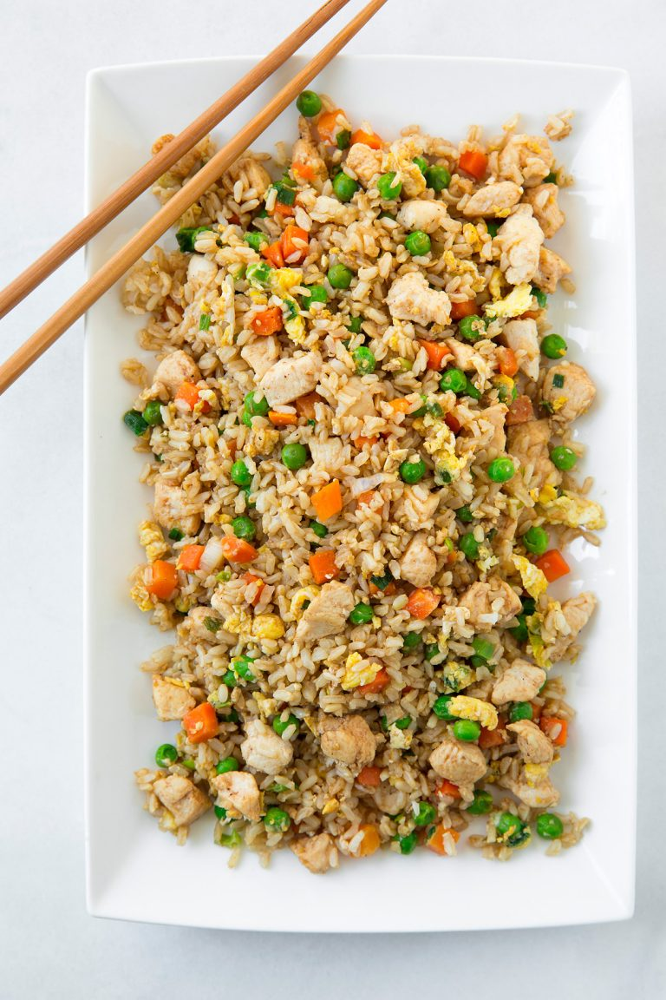

Chicken Fried rice

As a foodie, I can tell you that chicken fried rice is a dish that truly combines comfort and flavor. The dish
is made by stir-frying cooked rice with a variety of ingredients, including chicken, vegetables, and eggs. The
rice is seasoned with soy sauce and sometimes oyster sauce, giving it a savory and slightly sweet flavor. The
combination of textures, with the crispy chicken, chewy rice, and crunchy vegetables, makes for an explosion of
flavor in each bite.
Ingredients
- 3 cups cooked long-grain brown rice (preferably left over rice. White is fine too)
- 3/4 lb bonelss skinless chicken breasts , diced into 3/4-inch pieces
- 1 Tbsp toasted sesame oil , divided
- 1 Tbsp canola oil , divided
- 1 1/3 cups frozen peas and carrots blend
- 3 green onions chopped
- 2 cloves garlic , minced
- 2 large eggs
- 3 Tbsp low-sodium1 soy sauce
- Salt and freshly ground black pepper
Steps
- In a large non-stick wok or skillet, heat 1 1/2 tsp sesame oil and 1 1/2 tsp of the canola oil over
medium-high heat. Once hot, add chicken pieces, season lightly with salt and pepper and saute until cooked
through, about 5 - 6 minutes. Transfer chicken to a plate and set aside.
- Return skillet to medium-high heat, add remaining 1 1/2 tsp sesame oil and 1 1/2 tsp canola oil. Add peas
and carrots blend and green onions and saute 1 minute, then add garlic and saute 1 minute longer. Push
veggies to edges of pan, add eggs in center and cook and scramble.
- Return chicken to skillet along with rice. Add in soy sauce and season with salt and pepper to taste. Serve
warm with Sriracha to taste if desired.